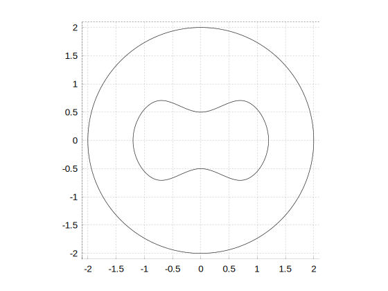
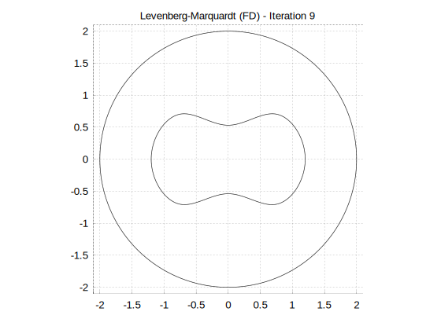
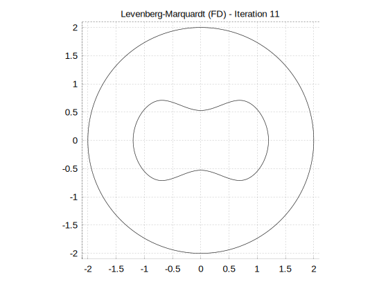
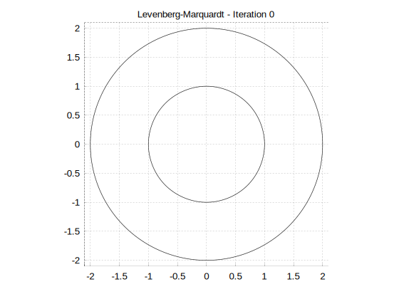
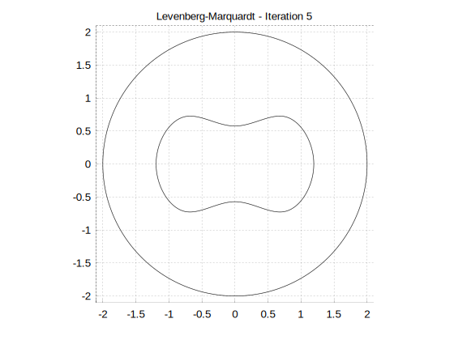
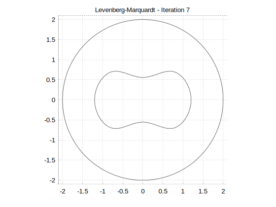
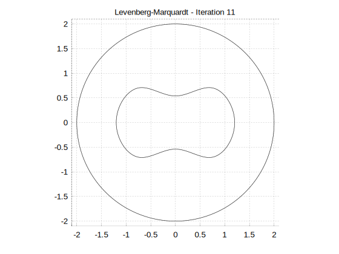
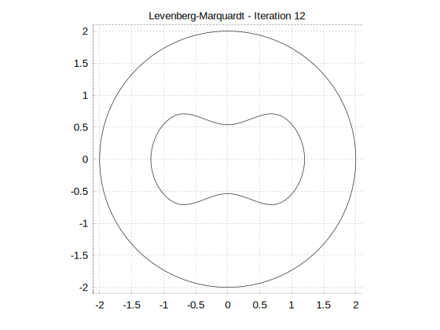
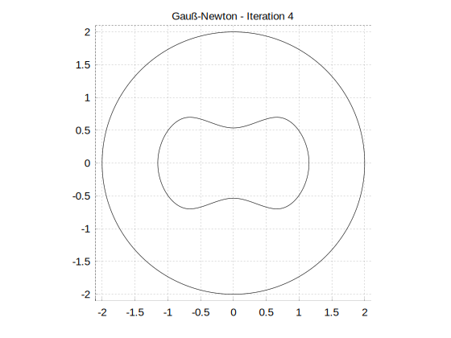

Gebietserkennung
Aufgabenstellung

- homogenes Gebiet $\Omega$
- unbekannte innere Inhomogenität $D$
- Rekonstruktion des Randes $\Gamma$ von $D$
-
Messdaten nur auf äußerem Rand $C$
- angelegte Spannung $f$
- gemessener Strom $g$
Mathematische Formulierung
\begin{align*}
\Delta u &= 0 \qquad\text{auf $\Omega \setminus D$} \\
u|_{\Gamma} &= 0 \\
u|_{C} &= f \\
{\tfrac{\partial u}{\partial \nu}}|_{C} &= g
\end{align*}
Das Randwertproblem
\begin{align*}
\Delta u &= 0 \qquad\text{auf $\Omega \setminus D$} \\
\end{align*}
- Dirichlet-Bedingungen: $u|_{\Gamma},\, u|_C$
- Neumann-Bedingungen: $\frac{\partial u}{\partial \nu}|_{\Gamma},\, \frac{\partial u}{\partial \nu}|_{C}$
- Lösbar, falls auf $\Gamma$ und $C$ jeweils eine Bedingung gegeben ist
Das Inverse Problem
\begin{align*}
\Delta u &= 0 \qquad\text{auf $\Omega \setminus D$} \\
u|_{\Gamma} &= 0 \\
u|_{C} &= f \\
{\tfrac{\partial u}{\partial \nu}}|_{C} &= g
\end{align*}
Welches $\Gamma$ erfüllt dies?
Ansatz:
- Nutze Vorwärtsproblem
- Löse $f = F(\Gamma)$
Das Vorwärtsproblem $F(\Gamma)$
\begin{align*}
\Delta u &= 0 \qquad\text{auf $\Omega \setminus D$} \\
u|_{\Gamma} &= 0 \\
{\tfrac{\partial u}{\partial \nu}}|_{C} &= g \\
\implies u|_{C} &= f =: F(\Gamma) \\
\end{align*}
- Jede Auswertung löst ein Randwertproblem
- $\implies$ teuer
- $F'(\Gamma)$ leicht berechenbar?
Das Vorwärtsproblem $F'(\Gamma)\cdot h$
\begin{align*}
\Delta w &= 0 \qquad\text{auf $\Omega \setminus D$} \\
w|_{\Gamma} &= \tfrac{\partial u}{\partial \nu} h_\nu \\
{\tfrac{\partial w}{\partial \nu}}|_{C} &= 0 \\
\implies w|_{C} &=: F'(\Gamma)\cdot h \\
\end{align*}
- Jacobi-Matrix berechenbar
- Jede Auswertung $F'(\Gamma)\cdot h$ löst ein Randwertproblem
- $\implies$ auch teuer, aber weniger als FDs
Diskretisierung
-
Kurven, z.B. $C, \Gamma$:
- kartesisch: $n \times 2$-Matrix, $[x, y]$,
- oder äquidistant radial: $n$-Vektor
- geometry: “
InterpolationCurve”
-
Dirichlet-/Neumann Randdaten:
- kartesisch: $n \times 3$-Matrix, $[x, y, f(x,y)]$,
- function: “
Interpolation”
Algorithmen
Löse $H(x) := F(x) - f = 0$ durch Minimierung der Fehlerquadrate
- Gauß-Newton mit berechneter Jacobimatrix
fsolve(Levenberg-Marquardt) mit finiten Differenzenfsolve(Levenberg-Marquardt) mit berechneter Jacobimatrix
Gauss-Newton
- Minimiere \[ \|H(x)\|^2 \approx \|H(x_k) + H'(x_k)(x-x_k)\|^2 \]
- $x_{k+1} := x_k - \Big( H'(x_k)^T H'(x_k) \Big)^{-1} H'(x_k)^T H(x_k)$
Levenberg-Marquardt
- Minimiere statt $\|H(x)\|^2 \approx \|H(x_k) + H'(x_k)(x-x_k)\|^2$ die Summe \[ \|H(x_k) + H'(x_k)(x-x_k)\|^2 + \mu \|x-x_k\|^2. \]
- $x_{k+1} := x_k - \Big( H'(x_k)^T H'(x_k) + \mu I\Big)^{-1} H'(x_k)^T H(x_k)$
Testumgebung
- $C$: Kreis mit Radius $2$
- $\Gamma$: Erdnussform, $8$ Stützstellen (radial gegeben)
- $f = 1$, $30$ Stellen, äquidistant auf $C$
- $g$ simuliert, $30$ Stellen, äquidistant auf $C$
- $\Gamma_0$: Kreis mit Radius $1$

Bilder, Levenberg-Marquardt FD


Bilder, Levenberg-Marquardt





Bilder, Gauß-Newton

Vergleich, $\|x_k - x\|$
k levmarqfd levmarq gsnewt 00 0.7616 0.7616 0.7616 01 0.2544 0.3245 0.2931 02 0.2585 0.3100 0.3291 03 0.1603 0.1881 0.1243 04 0.1122 0.1505 0.0897 05 0.0664 0.1147 0.0629 06 0.0576 0.0919 0.0517 07 0.0544 0.0802 0.0478 08 0.0518 0.0654 0.0451 09 0.0500 0.0617 0.0448 10 0.0508 0.0587 0.0442 11 0.0418 0.0556 0.0443 12 0.0426 0.0532 0.0441 13 0.0442 14 0.0441
Implementierung
- Referenzierung von geometry-features
- Funktioneninterpolation benötigt Daten in externer Datei
- Funktioneninterpolation in 2D nur linear
- Punkte auf interpolierten Kurven generieren?
/